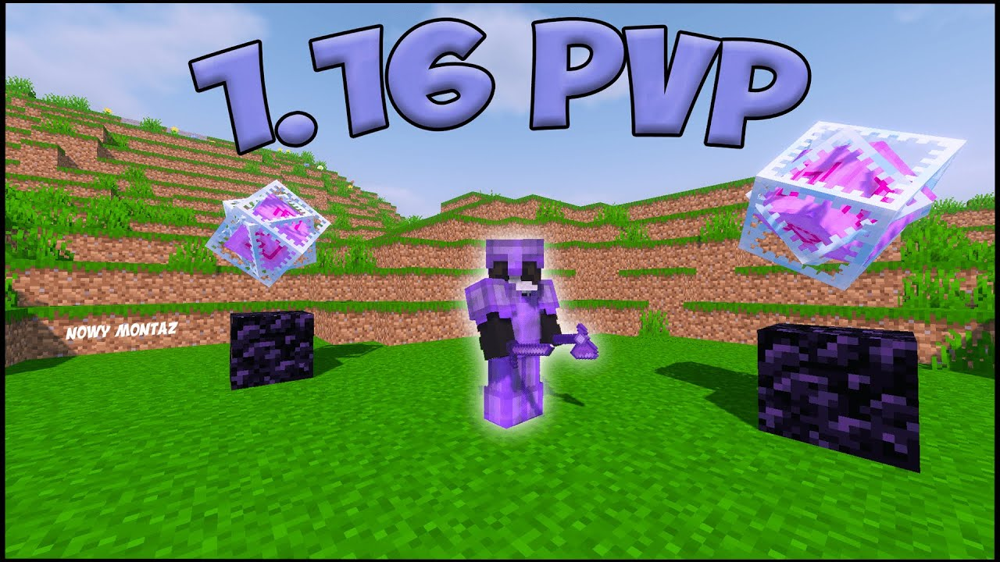

1.8 PVP
W-tapping is a crucial technique in Minecraft to maintain a sprint even after hitting an opponent.
It involves holding down ctrl and w to reset the sprint and deal increased knockback.
This allows you to hit the opponent while they are still sprinting towards you, allowing you to hit them first.
This allows you to gain more reach and hit them first again.
People use fishing rods to gain more reach while sprinting forward due to ping and network latency. Minecraft works in "ticks,"
where the system updates itself, putting you slightly ahead of your current position, giving you more reach. Fishing rods do no damage to players but knock them back,
allowing you to hit them first.
To use w-tapping combos, throw the rod 5-7 blocks away from your opponent, hotkey to your sword, and w-tap.
Practice to find your rod's "sweet spot" and predict their movement if they are strafing you.
1.16 PVP
Minecraft involves understanding attack mechanics, such as timing hits, utilizing blocks and dodging, positioning, inventory management, and practicing combo techniques.
Players should aim for a height advantage, use obstacles, and maintain good condition of their swords.
Combo techniques like W-tapping and S-tapping can be used to reset sprints and block incoming attacks. Shields should be used wisely to create openings for counterattacks.
Players should adapt their strategy based on their opponent's play style, practice in duels, watch others, and use enchantments like Sharpness, Knockback, Fire Aspect, and Looting.
Lastly, players should stay calm and focused in battle to avoid panic and mistakes.
Minecraft

.jpg)